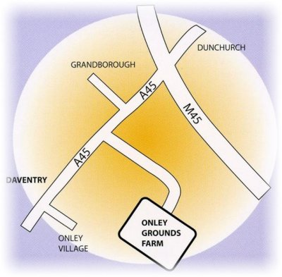

NORMAL OPENING HOURS - SATURDAYS AND SUNDAYS FROM 10 AM TILL 4 PMALSO OPEN BANK HOLIDAY MONDAY FROM 10 AM TILL 4PM

Find us just off the A45 1 mile out of Dunchurch, heading towards Daventry.
Address: Onley Grounds Farm Shop, Onley Grounds Farm, Willoughby Rugby, Warwickshire. CV23 8AJ
Our site is currently being developed but you can get lots more information about us by clicking on the following links:
 and Follow @onleyfarmshop
and Follow @onleyfarmshop